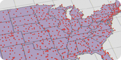
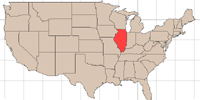
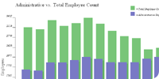
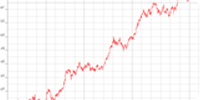
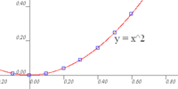
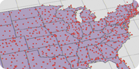
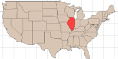
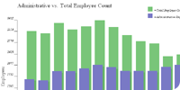
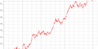
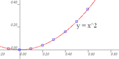

This class in data visualization began discussing the principles of presenting quantitative information visually - how to isolate and effectively present the important features of a dataset. Edward Tufte's work was cited frequently. The class continued with discussion regarding some important mathematical techniques used in visualization and went on to use the Win32 Graphics API to display data. We rounded out the quarter delving into the Visualization Toolkit, using this free library to build and display data in some presentable fashion.
Dr. John McDonald provided the application framework form this classes' project. I wrote all of the code to specification, demonstrating a particular graphics technique. Topics discussed in class include:
- research and communicative applications of visualization
- principles of graphing:
- clarity
- data prominance
- clutter avoidance
- Weber's Law of human perception
- The Lie Factor
- Perceptive Tasks:
- angle
- area
- hue
- saturation
- density
- length
- position along common scales
- position along non-aligned scales
- slope
- volume
- logarithms in charting
- ray/ray intersections for boundary location
- map projections:
- unprojected latitude/longitude
- cylindrical projection
- conformal conic projection
- Marching Squares generation of isocurves
- Delaunay Triangulation
- scatter plotting
- VTK architecture
- elevation construction
- VTK volume ray-tracing
- Julia and Mandelbrot sets
- polygonal subdivision:
- butterfly subdivision
- loop subdivision
Programs demonstrating these techniques are available below.
 








